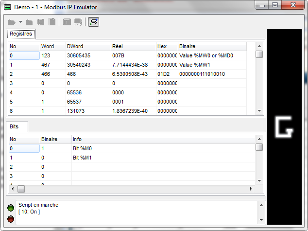

Lorsque votre projet est paramètré, vous pouvez lancer l'émulateur en cliquant sur l'icone  .
. Celui-ci ouvre le port configuré (normalement le 502) et se met en attente de connexion (Si
vous avez un firewall n'oubliez pas les autorisations).
Si le port série est actif, les requêtes provenant de celui-ci seront transmis à l'émulateur.

En cliquant droit sur la zone d'information en bas de la fenêtre, vous pouvez demander
l'affichage des requêtes reçues par l'émulateur.